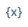
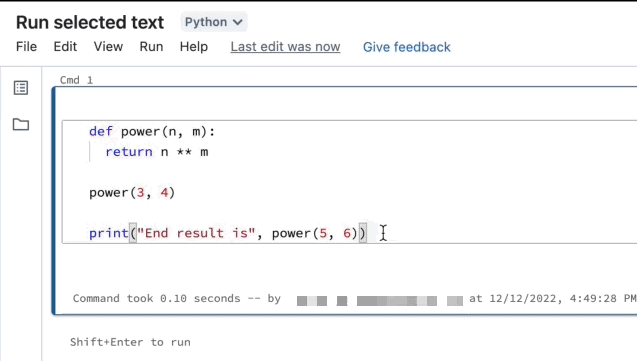
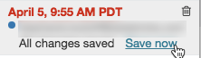
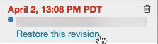
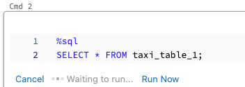

Develop code in Databricks notebooks
This page describes how to develop code in Databricks notebooks, including autocomplete, automatic formatting for Python and SQL, combining Python and SQL in a notebook, and tracking the notebook version history.
For more details about advanced functionality available with the editor, such as autocomplete, variable selection, multi-cursor support, and side-by-side diffs, see Use the Databricks notebook and file editor.
Access notebook for editing
To open a notebook, use the workspace Search function or use the workspace browser to navigate to the notebook and click on the notebook’s name or icon.
Browse data
Use the schema browser to explore tables and volumes available for the notebook. Click at the left side of the notebook to open the schema browser.
The For you button displays only those tables that you’ve used in the current session or previously marked as a Favorite.
As you type text into the Filter box, the display changes to show only those items that contain the text you type. Only items that are currently open or have been opened in the current session appear. The Filter box does not do a complete search of the catalogs, schemas, and tables available for the notebook.
To open the  kebab menu, hover the cursor over the item’s name as shown:
kebab menu, hover the cursor over the item’s name as shown:
If the item is a table, you can do the following:
Automatically create and run a cell to display a preview of the data in the table. Select Preview in a new cell from the kebab menu for the table.
View a catalog, schema, or table in Catalog Explorer. Select Open in Catalog Explorer from the kebab menu. A new tab opens showing the selected item.
Get the path to a catalog, schema, or table. Select Copy … path from the kebab menu for the item.
Add a table to Favorites. Select Add table to favorites from the kebab menu for the table.
If the item is a catalog, schema, or volume, you can copy the item’s path or open it in Catalog Explorer.
To insert a table or column name directly into a cell:
Click your cursor in the cell at the location you want to enter the name.
Move your cursor over the table name or column name in the schema browser.
Click the double arrow that appears at the right of the item’s name.
Keyboard shortcuts
To display keyboard shortcuts, select Help > Keyboard shortcuts. The keyboard shortcuts available depend on whether the cursor is in a code cell (edit mode) or not (command mode).
Find and replace text
To find and replace text within a notebook, select Edit > Find and Replace. The current match is highlighted in orange and all other matches are highlighted in yellow.
To replace the current match, click Replace. To replace all matches in the notebook, click Replace All.
To move between matches, click the Prev and Next buttons. You can also press shift+enter and enter to go to the previous and next matches, respectively.
To close the find and replace tool, click or press esc.
Variable explorer
You can directly observe Python, Scala, and R variables in the notebook UI. For Python on Databricks Runtime 12.1 and above, the variables update as a cell runs. For Scala, R, and for Python on Databricks Runtime 12.0 and below, variables update after a cell finishes running.
To open the variable explorer, click  in the right sidebar. The variable explorer opens, showing the value and data type, including shape, for each variable that is currently defined in the notebook. (The shape of a PySpark dataframe is ‘?’, because calculating the shape can be computationally expensive.)
To filter the display, enter text into the search box. The list is automatically filtered as you type.
Variable values are automatically updated as you run notebook cells.
Run selected cells
You can run a single cell or a collection of cells. To select a single cell, click anywhere in the cell. To select multiple cells, hold down the Command key on MacOS or the Ctrl key on Windows, and click in the cell outside of the text area as shown in the screen shot.
To run the selected cells, select Run > Run selected cell(s).
The behavior of this command depends on the cluster that the notebook is attached to.
On a cluster running Databricks Runtime 13.3 LTS or below, selected cells are executed individually. If an error occurs in a cell, the execution continues with subsequent cells.
On a cluster running Databricks Runtime 14.0 or above, or on a SQL warehouse, selected cells are executed as a batch. Any error halts execution, and you cannot cancel the execution of individual cells. You can use the Interrupt button to stop execution of all cells.
Modularize your code
Preview
This feature is in Public Preview.
With Databricks Runtime 11.2 and above, you can create and manage source code files in the Databricks workspace, and then import these files into your notebooks as needed.
For more information on working with source code files, see Share code between Databricks notebooks and Work with Python and R modules.
Run selected text
You can highlight code or SQL statements in a notebook cell and run only that selection. This is useful when you want to quickly iterate on code and queries.
Highlight the lines you want to run.
Select Run > Run selected text or use the keyboard shortcut
Ctrl+Shift+Enter. If no text is highlighted, Run Selected Text executes the current line.
If you are using mixed languages in a cell, you must include the %<language> line in the selection.
Run selected text also executes collapsed code, if there is any in the highlighted selection.
Special cell commands such as %run, %pip, and %sh are supported.
You cannot use Run selected text on cells that have multiple output tabs (that is, cells where you have defined a data profile or visualization).
Format code cells
Databricks provides tools that allow you to format Python and SQL code in notebook cells quickly and easily. These tools reduce the effort to keep your code formatted and help to enforce the same coding standards across your notebooks.
Format Python cells
Preview
This feature is in Public Preview.
Databricks supports Python code formatting using Black within the notebook. The notebook must be attached to a cluster with black and tokenize-rt Python packages installed, and the Black formatter executes on the cluster that the notebook is attached to.
On Databricks Runtime 11.2 and above, Databricks preinstalls black and tokenize-rt. You can use the formatter directly without needing to install these libraries.
On Databricks Runtime 11.1 and below, you must install black==22.3.0 and tokenize-rt==4.2.1 from PyPI on your notebook or cluster to use the Python formatter. You can run the following command in your notebook:
%pip install black==22.3.0 tokenize-rt==4.2.1
or install the library on your cluster.
For more details about installing libraries, see Python environment management.
For files and notebooks in Databricks Repos, you can configure the Python formatter based on the pyproject.toml file. To use this feature, create a pyproject.toml file in the Repo root directory and configure it according to the Black configuration format. Edit the [tool.black] section in the file. The configuration is applied when you format any file and notebook in that Repo.
How to format Python and SQL cells
You must have Can Edit permission on the notebook to format code.
You can trigger the formatter in the following ways:
Format a single cell
Keyboard shortcut: Press Cmd+Shift+F.
Command context menu:
Format SQL cell: Select Format SQL in the command context dropdown menu of a SQL cell. This menu item is visible only in SQL notebook cells or those with a
%sqllanguage magic.Format Python cell: Select Format Python in the command context dropdown menu of a Python cell. This menu item is visible only in Python notebook cells or those with a
%pythonlanguage magic.
Notebook Edit menu: Select a Python or SQL cell, and then select Edit > Format Cell(s).
Format multiple cells
Select multiple cells and then select Edit > Format Cell(s). If you select cells of more than one language, only SQL and Python cells are formatted. This includes those that use
%sqland%python.Format all Python and SQL cells in the notebook
Select Edit > Format Notebook. If your notebook contains more than one language, only SQL and Python cells are formatted. This includes those that use
%sqland%python.
Limitations of code formatting
Black enforces PEP 8 standards for 4-space indentation. Indentation is not configurable.
Formatting embedded Python strings inside a SQL UDF is not supported. Similarly, formatting SQL strings inside a Python UDF is not supported.
Version history
Databricks notebooks maintain a history of notebook versions, allowing you to view and restore previous snapshots of the notebook. You can perform the following actions on versions: add comments, restore and delete versions, and clear version history.
You can also sync your work in Databricks with a remote Git repository.
To access notebook versions, click in the right sidebar. The notebook version history appears. You can also select File > Version history.
Add a comment
To add a comment to the latest version:
Click the version.
Click Save now.
In the Save Notebook Version dialog, enter a comment.
Click Save. The notebook version is saved with the entered comment.
Restore a version
To restore a version:
Click the version.
Click Restore this version.
Click Confirm. The selected version becomes the latest version of the notebook.
Code languages in notebooks
Set default language
The default language for the notebook appears next to the notebook name.

To change the default language, click the language button and select the new language from the dropdown menu. To ensure that existing commands continue to work, commands of the previous default language are automatically prefixed with a language magic command.
Mix languages
By default, cells use the default language of the notebook. You can override the default language in a cell by clicking the language button and selecting a language from the dropdown menu.
Alternately, you can use the language magic command %<language> at the beginning of a cell. The supported magic commands are: %python, %r, %scala, and %sql.
Note
When you invoke a language magic command, the command is dispatched to the REPL in the execution context for the notebook. Variables defined in one language (and hence in the REPL for that language) are not available in the REPL of another language. REPLs can share state only through external resources such as files in DBFS or objects in object storage.
Notebooks also support a few auxiliary magic commands:
%sh: Allows you to run shell code in your notebook. To fail the cell if the shell command has a non-zero exit status, add the-eoption. This command runs only on the Apache Spark driver, and not the workers. To run a shell command on all nodes, use an init script.%fs: Allows you to usedbutilsfilesystem commands. For example, to run thedbutils.fs.lscommand to list files, you can specify%fs lsinstead. For more information, see Work with files on Databricks.%md: Allows you to include various types of documentation, including text, images, and mathematical formulas and equations. See the next section.
SQL syntax highlighting and autocomplete in Python commands
Syntax highlighting and SQL autocomplete are available when you use SQL inside a Python command, such as in a spark.sql command.
Explore SQL cell results in Python notebooks using Python
You might want to load data using SQL and explore it using Python. In a Databricks Python notebook, table results from a SQL language cell are automatically made available as a Python DataFrame assigned to the variable _sqldf.
In Databricks Runtime 13.0 and above, you can also access the DataFrame result using IPython’s output caching system. The prompt counter appears in the output message displayed at the bottom of the cell results. For the example shown, you would reference the result as Out[2].
Note
The variable
_sqldfmay be reassigned each time a%sqlcell is run. To avoid losing reference to the DataFrame result, assign it to a new variable name before you run the next%sqlcell:new_dataframe_name = _sqldf
If the query uses a widget for parameterization, the results are not available as a Python DataFrame.
If the query uses the keywords
CACHE TABLEorUNCACHE TABLE, the results are not available as a Python DataFrame.
The screenshot shows an example:
Execute SQL cells in parallel
While a command is running and your notebook is attached to an interactive cluster, you can run a SQL cell simultaneously with the current command. The SQL cell is executed in a new, parallel session.
To execute a cell in parallel:
Click Run Now. The cell is immediately executed.

Because the cell is run in a new session, temporary views, UDFs, and the implicit Python DataFrame (_sqldf) are not supported for cells that are executed in parallel. In addition, the default catalog and database names are used during parallel execution. If your code refers to a table in a different catalog or database, you must specify the table name using three-level namespace (catalog.schema.table).
Execute SQL cells on a SQL warehouse
Preview
This feature is in Public Preview.
You can run SQL commands in a Databricks notebook on a SQL warehouse, a type of compute that is optimized for SQL analytics. See Use a notebook with a SQL warehouse.
Display images
To display images stored in the FileStore, use the syntax:
%md

For example, suppose you have the Databricks logo image file in FileStore:
dbfs ls dbfs:/FileStore/
databricks-logo-mobile.png
When you include the following code in a Markdown cell:
the image is rendered in the cell:
Display mathematical equations
Notebooks support KaTeX for displaying mathematical formulas and equations. For example,
%md
\\(c = \\pm\\sqrt{a^2 + b^2} \\)
\\(A{_i}{_j}=B{_i}{_j}\\)
$$c = \\pm\\sqrt{a^2 + b^2}$$
\\[A{_i}{_j}=B{_i}{_j}\\]
renders as:
and
%md
\\( f(\beta)= -Y_t^T X_t \beta + \sum log( 1+{e}^{X_t\bullet\beta}) + \frac{1}{2}\delta^t S_t^{-1}\delta\\)
where \\(\delta=(\beta - \mu_{t-1})\\)
renders as:
Include HTML
You can include HTML in a notebook by using the function displayHTML. See HTML, D3, and SVG in notebooks for an example of how to do this.
Note
The displayHTML iframe is served from the domain databricksusercontent.com and the iframe sandbox includes the allow-same-origin attribute. databricksusercontent.com must be accessible from your browser. If it is currently blocked by your corporate network, it must added to an allow list.
Link to other notebooks
You can link to other notebooks or folders in Markdown cells using relative paths. Specify the href
attribute of an anchor tag as the relative path, starting with a $ and then follow the same
pattern as in Unix file systems:
%md
<a href="$./myNotebook">Link to notebook in same folder as current notebook</a>
<a href="$../myFolder">Link to folder in parent folder of current notebook</a>
<a href="$./myFolder2/myNotebook2">Link to nested notebook</a>